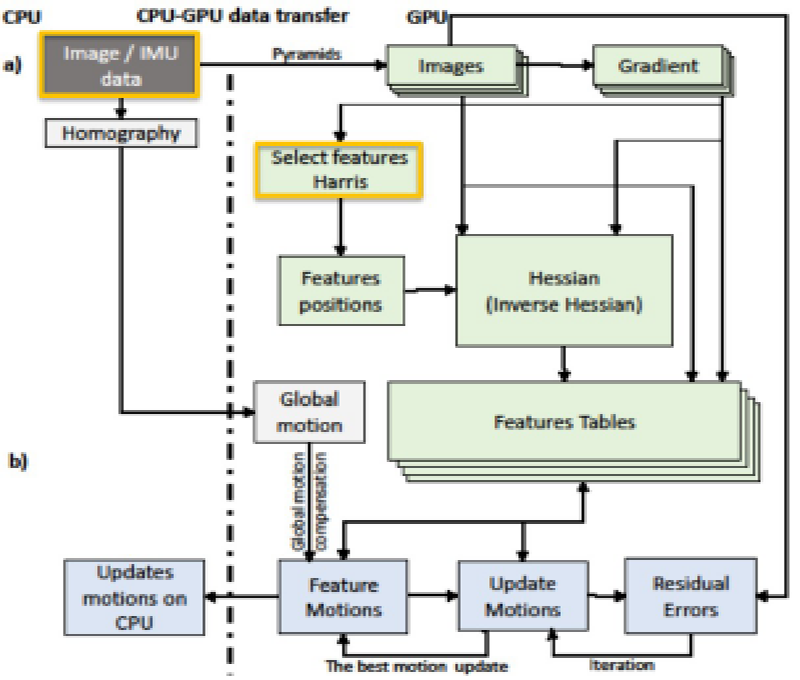

Valérie Gouet-Brunet
IGN · 73 avenue de Paris · 94165 Saint-Mandé Cedex FRANCE · (+33)1 43 98 62 10 · valerie.gouet@ign.fr
ICT senior scientist specialized in Content-based Image Retrieval, Computer Vision and Multimedia, with current applications to the valorization of cultural and natural iconographic Heritage
Short bio. Valérie Gouet-Brunet has been research director (DR1) of the French Ministry of Ecology (MTES) since 2012. She carries out her research at the French mapping agency (IGN - National Institute for Geographical and Forest Information), within the LaSTIG laboratory, and at the University Gustave Eiffel. Within the ACTE research group, she is in charge of researches on the description by content, matching and indexing of large-scale and long-term multimedia collections, with a focus on images and their structuring, exploration and spatialization with application to cultural and natural heritage. For 4 years until 2018, she headed the MATIS laboratory (35 members) at IGN, specialized in mathematics and computer science applied to photogrammetry, computer vision and remote sensing for multi-sensor and multi-source imaging. She obtained a PhD in Computer Vision in 2000 from the University of Montpellier II (France) on the area of color image matching with application to intermediate view synthesis, and an habilitation to conduct research at the Pierre and Marie Curie University (France) in 2008 on the area of content-based structuring of collections of still and animated images. V. Gouet-Brunet has supervised more than fifty PhD students and researchers and participated in or coordinated some twenty partnership projects of various kinds (French national ANR and FUI projects, European projects, bilateral industrial contracts, international research collaborations). Currently, she is coordinating the ALEGORIA project (French ANR 2018-2021), is member of the steering committee of the French Association for pattern recognition and interpretation (AFRIF), of the board of the European association Time Machine Organisation, and of the working group "Digital data" of the scientific site for the restoration of Notre-Dame de Paris.
Directrice de recherche (DR1 MTES) dans le domaine des STIC, spécialisée en indexation d'images par contenu, vision par ordinateur et multimédia, avec comme principale application actuelle la valorisation du patrimoine iconographique culturel et naturel
Short bio. Valérie Gouet-Brunet est directrice de recherche (DR1) du Ministère de la Transition Ecologique et Solidaire (MTES) depuis 2012, en poste à l'IGN (Institut National de l'Information Géographique et Forestière). Elle effectue ses recherches au sein du laboratoire LaSTIG de l'IGN, rattaché à l'université Gustave Eiffel. Au sein de l'équipe ACTE, elle est en charge de recherches sur la description par le contenu visuel, l'appariement et l'indexation de collections multimédia à large échelle et à long terme, avec un focus sur les contenus iconographiques et leur structuration, exploration et spatialisation pour le patrimoine culturel et naturel. Pendant 4 ans jusqu'en 2018, elle a dirigé le laboratoire MATIS (35 membres) de l'IGN, spécialisé dans les mathématiques et l'informatique appliquées à la photogrammétrie, la vision par ordinateur et la télédétection pour l'imagerie multi-capteur et multi-source. Elle a obtenu un doctorat en vision par ordinateur en 2000 à l'Université de Montpellier II sur le thème de l'appariement d'images couleur avec application à la synthèse de vues intermédiaires, puis une HdR à l'Université Pierre et Marie Curie en 2008 sur le thème de la structuration par contenu de collections d'images fixes et animées. V. Gouet-Brunet a supervisé plus d'une cinquantaine de doctorants et chercheurs, et participé à ou coordonné une vingtaine de projets partenariaux de différentes natures (ANR, FUI, projets Européens, contrats industriels bilatéraux, collaborations de recherche internationales). Actuellement, elle coordonne le projet ANR ALEGORIA (ANR AAPG 2018-2021), est membre du conseil d'administration de l' AFRIF, du comité de pilotage de l'association européenne Time Machine Organisation, et participe au groupe de travail "Données numériques" du chantier scientifique pour la restauration de Notre-Dame de Paris.
Current research areas and applications
Sujets de recherche actuels et applications
Content-based image indexing and retrieval in challenging conditions
Indexation et recherche d'images par contenu visuel en conditions difficiles
Visual saliency in urban contents
Saillance visuelle en imagerie urbaine
Fusion of modalities for image matching, classification and indexing
Fusion de modalités pour l'appariement, la classification et l'indexation d'images
Learning geometric modalities for vision-based retrieval in challenging conditions
Apprentissage de modalités géométriques pour la recherche d'images par contenu en conditions difficiles

Combination of visual and inertial sensors for tracking on embedded systems
Combinaison d'informations visuelles et inertielles pour le suivi embarqué

Land use classification by joint analysis of superspectral and LiDAR imagery
Classification OCS par analyse conjointe d'images superspectrales et LiDAR
Applications
Applications
Structuring and interlinking of cultural and natural iconographic heritage
Structuration et interconnexions du patrimoine iconographique culturel et naturel

Long-term vision-based localization
Localisation basée vision à long terme
Publications
International journals / Revues internationales [ACL(N)]
National journals / Revues nationales [ACL(N)]
Non-reviewed journals / Revues sans comité de lecture [ASCL]
International conferences / Conférences internationales [ACTI]
National conferences / Conférences nationales [ACTN]
Conferences without proceedings / Communications orales sans actes [COM]
Books and Chapters / Livres et chapitres de livre [OS]
Book or journal editors / Directions d'ouvrages ou de revues [DO]
Posters / Posters [AFF]
Preprints / Rapports [AP]
Dissertations / Thèse et HDR [TH]
Invited Talks / Conférences invitées [INV]
Popularization / Vulgarisation [PV]
Ongoing and past projects at IGN
Projets en cours et passés à l'IGN
ON STAGE 3D
cONtent-based STructuring of pAris photoGraphic hEritage in 3D
ANRT CIFRE Ville de Paris 2020-2023
cONtent-based STructuring of pAris photoGraphic hEritage in 3D
ANRT CIFRE Ville de Paris 2020-2023
Time Machine
« The Big Data of the past for the Future of Europe »
From 2019
(former CSA H2020 2019-2020)
« Les big data du passé pour l'avenir de l'Europe »
Depuis 2019
(anciennement CSA H2020 2019-2020)
ALEGORIA
« Advanced Linking and Exploitation of diGitized geOgRaphic Iconographic heritAge »
ANR AAPG 2018-2021
« structurAtion et vaLorisation du patrimoinE géoGraphique icOnogRaphIque démAtérialisé »
ANR AAPG 2018-2021
Archival City
« Understanding and exploitation of urban archives »
Tremplin i-Site FUTURE 2019-2023
« Compréhension et exploitation des archives urbaines »
Tremplin de l'i-Site FUTURE 2019-2023
pLaTINUM
« Long Term MappINg for Urban Mobility »
ANR AAPG 2015-2019
« Cartographie à long terme pour la mobilité urbaine »
ANR AAPG 2015-2019
POEME
« Photographic cOntents Exploration through iMmersive Environment »
ANR CONTINT 2013-2016
« Exploration de contenus photographiques à travers des environnements immersifs »
ANR CONTINT 2013-2016
DESCRiBE
« Online event detection in video sequences using structural and Bayesian approaches »
ANR ASTRID 2013-2015
« Détection d'évènement en ligne dans les séquences vidéo à partir d'approches structurelles et bayésiennes »
ANR ASTRID 2013-2015
Terra Mobilita
« 3D mapping of urban roads and public spaces, accessibility and soft traffic »
FUI 2011-2015
« Cartographie 3D de la voirie et de l’espace public urbains, accessibilité et circulations douces »
FUI 2011-2015
Experience and milestones
Parcours et faits marquants
Research director MTES (DR1 level)
Directrice de recherche MTES (DR1)
LaSTIG Lab, IGN - France
2019 - Present
Head of MATIS Lab
Responsable du laboratoire MATIS
MATIS Lab, IGN - France
2014 - 2017
Research director MTES (DR2 level)
Directrice de recherche MTES (DR2)
MATIS Lab, IGN - France
Research topics: content-based image indexing and retrieval applied to street-view and aeriel imagery
Head of the research group ATOLL (Image matching and structuring at large scale)
Oct. 2012 - 2018
Habilitation to direct researches
Habilitation à diriger des recherches
Pierre et Marie Curie University - France
Title: Content-based structuring of still and animated images collections
02/12/2008
Assistant professor
Maître de conférences
CEDRIC Lab / Computer Science Dept, Cnam Paris - France
Research topics: multimedia databases, content-based image retrieval at large scale
Teaching: databases, image analysis and computer vision in the Computer Science department of Cnam
Recipient of awards: PEDR (2005-2009) and PES (rank A, 2009-2012)
Sept. 2002 - 2012
Associate researcher
Chercheur associé (ingénieur expert)
Imedia research group, Inria - France
Researches in content-based image retrieval with application to video copy detection
Sept. 2002 - 2007
Post-doc fellow
Post-doctorat
Imedia research group, Inria - France
Researches in content-based image retrieval with a focus on local descriptors
2000 - 2002
PhD thesis
Thèse de doctorat
LGI2P Lab, Ecole des Mines d'Alès - France
Title: Color image matching - Application to the synthesis of novel views
Supervisors: Jean-Claude Bajard (Université de Montpellier II), Philippe Montesinos (EMA)
1996 - 2000
Defense: 25/10/2000
Defense: 25/10/2000
Miscellaneous
Divers
Ongoing PhD and researchers supervision
Directions de thèse et supervision de chercheurs en cours
-
Laura Willot: thesis co-supervised with Livio de Luca (MAP, CNRS/MC) and Dan Vodislav (ETIS, CY Cergy Paris Université), on the automatic classification of photographic images for spatio-temporal monitoring of restoration sites (ClaS-Ter project, 2021-2024)
Laura Willot : thèse co-encadrée avec Livio de Luca (MAP, CNRS/MC) et Dan Vodislav (ETIS, CY Cergy Paris Université), sur la classification automatique d’images photographiques pour le suivi spatio-temporel des chantiers de restauration (projet ClaS-Ter, 2021-2024)
-
Emile Blettery: thesis on the structuring of heritage iconographic contents by exploiting 2D and 3D information (ON STAGE 3D project, 2020-2023)
Emile Blettery : thèse sur la structuration de fonds iconographiques patrimoniaux par exploitation d'un référentiel géographique 2D et 3D (projet ON STAGE 3D, 2020-2023)
Past PhD and researchers supervision at IGN (from 2012)
Directions de thèse et supervision de chercheurs passées à l'IGN (depuis 2012)
-
Dimitri Gominski: thesis co-directed with Liming Chen (Centrale Lyon/LIRIS) on the description, matching and indexing of multi-date and multi-source image contents (ANR ALEGORIA and DGA projects, 2018-2021)
Dimitri Gominski : thèse co-dirigée avec Liming Chen (Centrale Lyon/LIRIS) sur la description, appariement et indexation de contenus image multi-date et multi-source (projets ANR ALEGORIA et DGA, 2018-2021)
-
Imane Salhi: thesis co-supervised with Erwan Piriou, Maroun Ojail (CEA-LIST/L3A) and Martyna Poreba on On-board intelligent camera for object tracking on a mobile platform (2017-2020)
Imane Salhi : thèse co-encadrée avec Erwan Piriou, Maroun Ojail (CEA-LIST/L3A) et Martyna Poreba sur la mise en oeuvre d'une caméra intelligente embarquée pour le suivi d'objet sur plateforme mobile (2017-2020)
-
Margarita Khokhlova: post-doc supervised with Liming Chen (Centrale Lyon/LIRIS) and Nathalie Abadie (LaSTIG) on machine learning and multi-modal image indexing (ALEGORIA project, 2018-2021)
Margarita Khokhlova : post-doctorante supervisée avec Liming Chen (Centrale Lyon/LIRIS) et Nathalie Abadie (LaSTIG) sur l'indexation d'images multi-modale par apprentissage profond (projet ALEGORIA, 2018-2021)
-
Nathan Piasco: thesis co-directed with Cedric Demonceaux (Bourgogne University/LE2I) and supervised by Desire Sidibe (Bourgogne University/LE2I) on vision-based localization with discriminative features from heterogeneous visual data (pLaTINUM project, 2016-2019)
Nathan Piasco : thèse co-dirigée avec Cédric Demonceaux (Université de Bourgogne/LE2I) et co-encadrée par Désiré Sidibé (Université de Bourgogne/LE2I) sur la localisation basée vision à partir de caractéristiques discriminantes issues de données visuelles hétérogènes (projet pLaTINUM, 2016-2019)
-
Kamel Guissous: thesis on visual saliency in urban imagery (Things2Do project, 2015-2019)
Kamel Guissous : thèse sur la saillance visuelle en imagerie urbaine (projet Things2Do, 2015-2019)
-
Neelanjan Bhowmik: thesis on multi-descriptor retrieval in digitalized photographs collections (POEME project, 2014-2017)
Neelanjan Bhowmik : thèse sur la recherche multi-descripteur dans les collections de photographies numérisées (projet POEME, 2014-2017)
-
Clement Dechesne: thesis supervised by Clement Mallet and Arnaud Le Bris on the extraction of forest features by joint analysis of superspectral or hyperspectral imagery and 3D lidar data (2014-2017)
Clément Déchesne, thèse co-encadrée par Clément Mallet et Arnaud Le Bris sur l'extraction de caractéristiques forestières par analyse conjointe de données image superspectrales/hyperspectrales et LiDAR (2014-2017)
-
Ali Seba: post-doc supervised with Ewelina Rupnik (IGN) on pose estimation in challenging conditions (Things2Do and SmartCity Vision projects, 2017-2019)
Ali Seba : post-doctorante supervisée avec Ewelina Rupnik (IGN) sur l'estimation de pose en conditions difficiles (projets Things2Do et SmartCity Vision, 2017-2019)
-
Li Weng: post-doc supervised with Bahman Soheilian (IGN) on camera localization with large-scale semantic object signatures (Things2Do project, 2016-2017)
Li Weng : post-doctorante supervisée avec Bahman Soheilian (IGN) sur la localisation de caméra à partir de signatures d'objets sémantiques à large échelle (projet Things2Do, 2016-2017)
-
Bastien Hell: engineer supervised with David Vandergucht (IGN) on the development of an object detector in images for semantic-based localization (Things2Do project, 2016-2017)
Bastien Hell, ingénieur supervisé avec David Vandergucht (IGN) sur le développement d’un détecteur d’objets dans des images pour la localisation basée sur l’analyse sémantique de l’environnement (projet Things2Do, 2016-2017)
-
David Vandergucht: engineer and project manager supervised with Bahman Soheilian (IGN) on visual-based localization on embedded targets and at large scale (Things2Do project, 2015-2017)
David Vandergucht, ingénieur chef de projet supervisé avec Bahman Soheilian (IGN) sur la localisation basée image sur cible embarquée et à large échelle (projet Things2Do, 2015-2017)
-
Lijun Wei: post-doc supervised with Bahman Soheilian (IGN) on the detection and matching of visual landmarks applied to visual-based localization (Terra Mobilita project, 2013-2015)
Lijun Wei : post-doctorante supervisée avec Bahman Soheilian (IGN) sur la détection et mise en correspondance d'amers visuels appliquées à la localisation basée image (projet Terra Mobilita, 2013-2015)
-
Abdalbassir Abou-Elailah: post-doc supervised with Isabelle Bloch (Telecom ParisTech) on the description of spatial relationships between complex visual entities represented with sparse sets (DESCRiBE project, 2013-2014)
Abdalbassir Abou-Elailah : post-doctorant supervisé avec Isabelle Bloch (Telecom ParisTech) sur la description et modélisation des relations spatiales entre entités visuelles complexes représentées par des ensembles épars (projet DESCRiBE, 2013-2014)
Teaching
Enseignement
-
From 2012, lectures in the Master's degree in photogrammetry, positioning and deformation measurement at ENSG
Depuis 2012, cours magistraux dans le Mastère PPMD (Photogrammétrie, Positionnement et Mesure des Déformations à l'ENSG
-
Extraction of local features in image contents
Extraction de caractéristiques locales dans les contenus image
-
Image matching
Appariement d'images
-
Content-based image indexing and retrieval
Indexation et recherche d'images par contenu visuel
-
From 2005 to 2018, lectures on multimedia databases in the Master ISI, Paris-Dauphine University
Entre 2005 et 2018, cours magistraux sur les bases de données multimédia dans le Master ISI, Université Paris-Dauphine
-
From 2005 to 2018, lectures on Acquisition and management of digital multimedia content, in the Master SIAW, Marne-la-Vallée University
Entre 2005 et 2018, cours magistraux sur l'acquisition et les traitement de contenus multimedia numériques, dans le Master SIAW, Université Marne-la-Vallée
Personal
Perso
-
Married, mom of two (2010 and 2015)
Mariée, deux enfants (2010 et 2015)
-
Die-hard Parisian city dweller who regularly takes refuge in Limousin and Normandy
Citadine parisienne invétérée qui se réfugie régulièrement en Limousin et en Normandie
-
Passionate about travel, photography, architecture, 1950-1970 design, pop art, street art and Louis de Funes
Passionnée par les voyages, la photographie, l'architecture, le design 1950-1970, le pop art, le street art et Louis de Funès